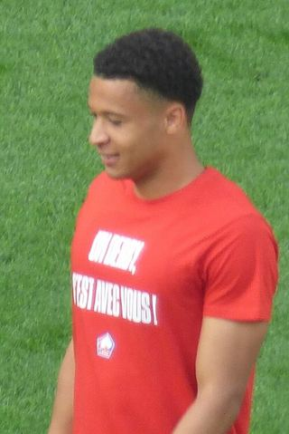

Ezzcoins › Player pages › Tiago Santos

75
RB

Tiago Santos
PAC82
SHO56
PAS71
DRI75
DEF70
PHY62
Tiago Santos
75 RB · LOSC · Ligue 1 McDonald's ·  Portugal
Portugal
750Recent console price
77Meta rating · RB +2 vs overall
RB77RM73
PAC82
SHO56
PAS71
DRI75
DEF70
PHY62
Chemistry style
Turn on JavaScript to see this card with each chemistry style.
- Position
- RB (also RM)
- Club
- LOSC
- League
- Ligue 1 McDonald's
- Nation
- Portugal
- Skill moves
- 3★
- Weak foot
- 3★
- Preferred foot
- Right
- Height
- 175 cm
- Age
- 24
- Full name
- Tiago Carvalho Santos
Meta rating: Ezzcoins' own estimate of how well this card plays in game, worked out from its stats for each position it can play, its skill moves, weak foot and PlayStyle+. An average card scores about its overall rating; higher means it plays above its rating.
Watch on EzzcoinsTiago Santos's special cards
More from LOSC
- 80
 Ayyoub BouaddiCDM
Ayyoub BouaddiCDM - 80
 Benjamin AndréCDM
Benjamin AndréCDM - 79
 Berke ÖzerGK
Berke ÖzerGK - 78
 AlexsandroCB
AlexsandroCB - 78
 Ayase UedaST
Ayase UedaST - 78Hákon Arnar HaraldssonCAM
- 78Romain PerraudLB
- 77
 Nabil BentalebCDM
Nabil BentalebCDM